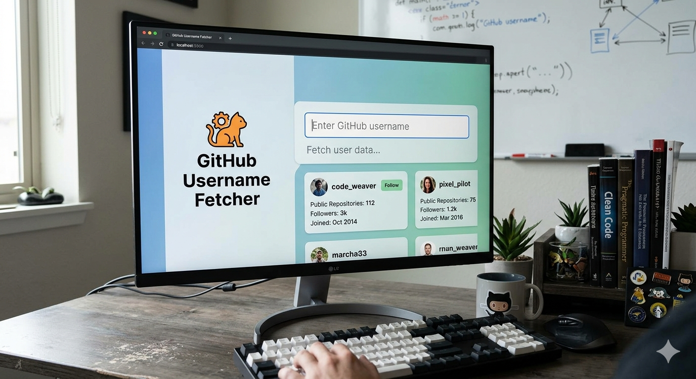

A to-do list is a powerful task management tool that helps individuals and teams capture, organize, and
execute tasks. It serves as a visual framework to prioritize work, reduce cognitive load by offloading
information, and ensure that important goals are met efficiently

Git Hub User Name Fetcher
This image shows a GitHub Username Fetcher web application running on a computer screen. It is a classic project used by developers to practice connecting front-end user interfaces with external APIs.